Ученик Д класса. Организатор, а не кандидат, у которого опыт начинается
после выборов: я уже собираю людей и довожу дела до конца.
IELTS 80
ОРГАНИЗАТОР MUN, хакатоны, Study Free форум
СТАЖЁР Logos
УЧУСЬ экономика и AI
ЗАПУСКАЮ свои проекты
01
Я кондитер. Реально умею готовить нормальные десерты,
так что со вкусом у меня всё в порядке.
02
В жизни я угарный челик, даже если в коридоре выгляжу так,
будто иду захватывать мир.
03
Я всегда топлю за своих. Если вы выбрали меня, я за вас буду
стоять до конца перед кем угодно.
подходите на перемене, пообщаемся
ИДУ НЕ ОДИН
67
Я иду с партией. У нас общие цели, и всё, что ниже, мы вытаскиваем вместе,
поэтому список такой длинный и поэтому он выполнимый.
Партия 67
Шесть человек с общими целями. Мы уже ходили по школе с постером и спрашивали
учеников и учителей, чего им не хватает — программа ниже собрана из их ответов.
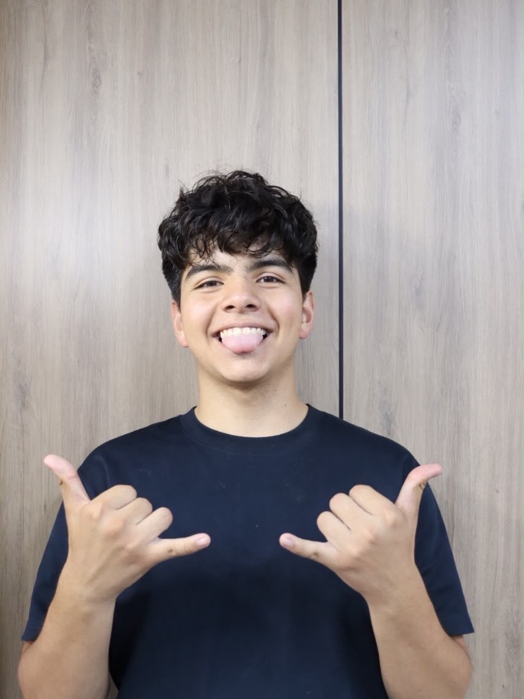
Муслим
кандидат в президенты
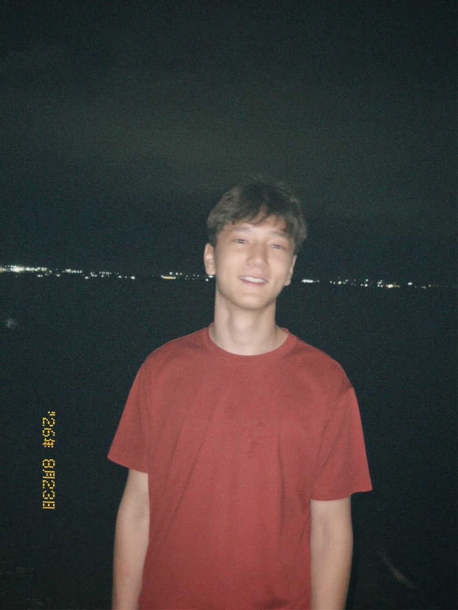
партия 67
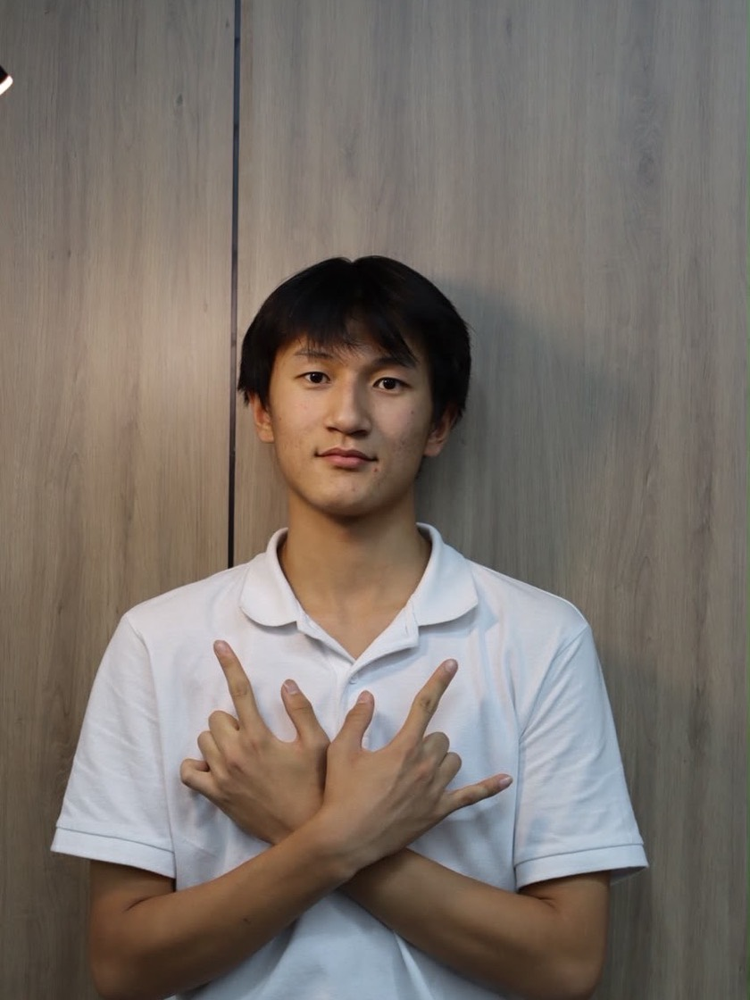
партия 67
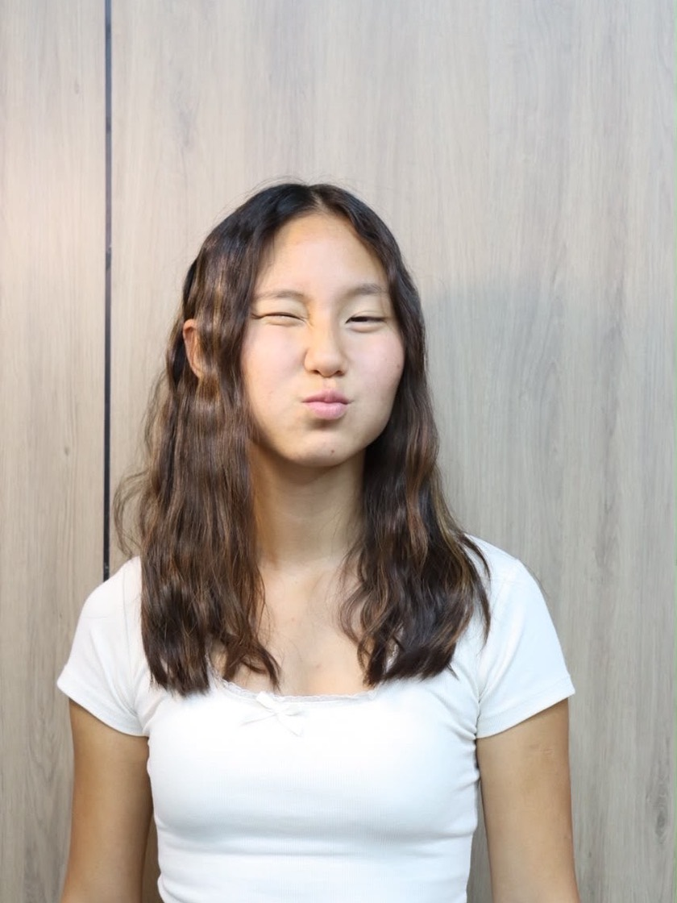
партия 67
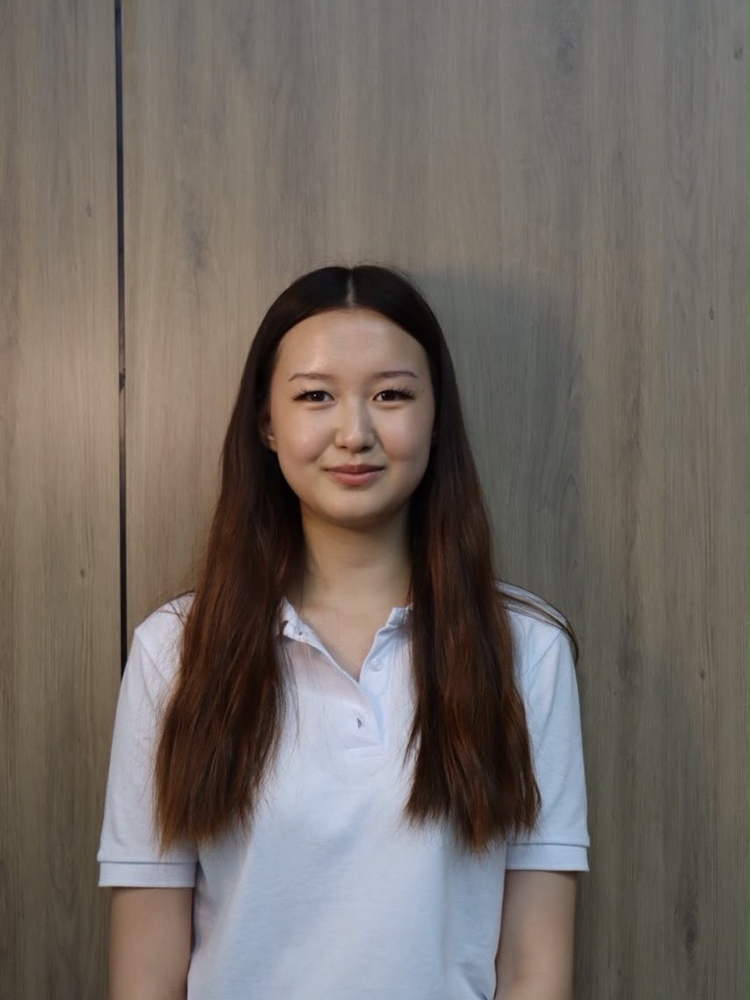
партия 67
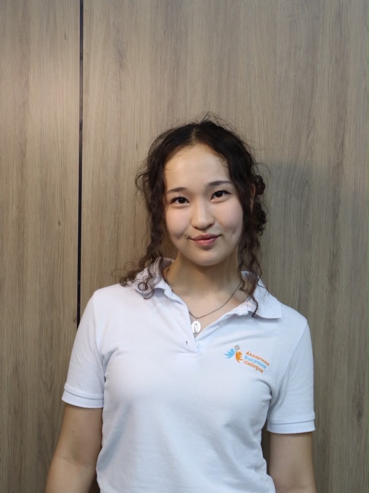
партия 67
мы с постером, до всяких выборов
Что я делаю и что будет дальше
Пятнадцать пунктов, и у каждого честный статус. Что-то уже запущено в агитационный
период. Что-то начнётся с первого дня. А три пункта это то, чего я добиваюсь: там я
обещаю усилие и открытый отчёт, а не результат. Смешивать это нечестно.
с этого всё и начинается
01
Голос учеников
Регулярные опросы по каждому решению, которое касается учеников, и открытый ящик идей. Не «совет что-то решил», а «спросили всех, вот результат, вот что с ним сделали».
Идёт сейчас
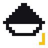
02
Неделя профориентации
Приезжают представители профессий и проводят настоящие тренинги: не лекцию «кем быть», а работу руками в своей сфере.
План
это серьёзно
03
Анонимная поддержка
Канал, где можно написать о том, что тяжело, не называя себя. Без разбирательств, без вызова родителей, без «а кто это был». Обращение видит только тот, кто помогает.
Идёт сейчас
04
Жалобы решаются сразу
У каждого обращения есть номер и срок. Видно, на каком оно этапе и чем закончилось. Проблема перестаёт исчезать где-то между «я передам» и «ну не получилось».
Идёт сейчас
05
Две недели — одна профессия
Не один доклад, после которого ничего не помнишь. Две недели подряд школа живёт одной сферой: люди из неё, задачи из неё, реальная работа. Потом следующая.
План
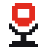
06
TEDx в школе
Настоящий TEDx: свои спикеры, свой зал, свои выступления. Не «классный час с презентацией», а формат, который узнают за пределами школы.
План
этого тут ещё не было
07
DECA: впервые в Центральной Азии
Крупнейшая школьная бизнес-олимпиада мира. Её ещё не было в ЦА. Я не обещаю, что получится с первого раза: я обещаю, что буду этого добиваться и покажу каждый шаг.
Добиваюсь
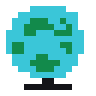
08
Портал реальных возможностей
Одно место, где собраны олимпиады, стажировки и программы. Только престижные: без pay-to-play, без «а вдруг повезёт». Каждая строчка проверена, иначе её там нет.
Добиваюсь
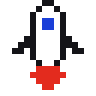
09
Бизнес-инкубатор и ярмарка стартапов
Школьники делают мини-проекты (мерч, хендмейд, услуги) и защищают их. Победители получают бюджет из школьного фонда и делают проект по-настоящему.
План
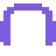
10
Медиацентр и подкаст
Школьный подкаст, где старшеклассники разбирают тренды, берут интервью у учителей и говорят о подростковых проблемах вслух, а не по углам.
План
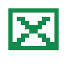
11
Тайный ангел
Месяц, когда выпускники школы, уже студенты вузов, анонимно переписываются со старшеклассниками: помогают выбрать университет и делятся тем, что знают только изнутри.
План
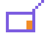
12
Школьное радио и новости
Своё радио на переменах и новости, которые пишут сами ученики. Школа перестаёт узнавать о себе последней.
План
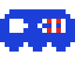
13
Кибертурнир по субботам
Brawl Stars и Minecraft, на телефонах и в компьютерном классе. Для младших это станет главным событием года, и это нормальный повод собраться всей школой.
План
14
Дни без формы и тематические дни
Уже согласовано с администрацией: дни, когда можно прийти собой, и дни со своей темой. Осталось назначить даты. Та самая мелочь, которую все хотят и о которой почему-то никто не договаривался.
Добиваюсь
да, про еду тоже
15
Мероприятия и столовая
Мероприятия: те, что набрали голоса в опросе, а не те, что придумал совет. Столовая: больше выбора и честные цены, начиная с конкретного списка претензий.
План
почему пятнадцать, а не три?
Потому что без первого не работает второе. Пока никто не спрашивает учеников
и жалоба уходит в пустоту, любая «новая столовая» — это снова чьё-то решение
за вас. Сначала способ вас услышать. Дальше по списку всё становится делом техники.
Напиши, чего не хватает
Это не форма ради формы. Всё, что сюда попадёт, приходит в кабинет школьного
парламента с номером заявки — я разбираю и добавляю в список, в том числе то,
чего нет в программе выше.
Что с твоим предложением
После отправки остаётся код. Введи его — покажу, на каком этапе
предложение и что ответила партия.
Если тяжело, напиши анонимно
Отдельный канал для того, что не хочется обсуждать вслух. Никто не узнает, кто написал:
ни классный руководитель, ни родители, ни одноклассники.
Это единственный пункт программы, вокруг которого не будет ни одной шутки: ни здесь, ни дальше.